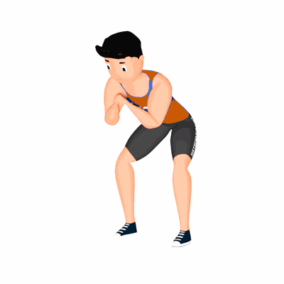

Agachamento em Isometria com Rotação de Tornozelo

O exercício tem como objetivo trabalhar a musculatura da região do quadríceps.
Ficha Técnica
Tipo: Funcional
Grupo Muscular: Perna
Aparelho: Nenhum
Músculos: Nenhum
Como realizar
- Manter os pés afastados na largura dos ombros e sempre bem apoiados no chão;
- Esticar os braços à frente do corpo;
- Manter o corpo em posição de isometria e com os pés retos;
- Inspirar antes de iniciar o agachamento e soltar o ar enquanto desce. Descer o suficiente para manter as coxas paralelas ao chão;
- Enquanto retorna a posição inicial gire o tornozelo para as laterais e realize novamente o agachamento;
- Retorne a posição inicial girando o tornozelo para dentro e repita os movimentos alternando a posição dos tornozelos.
 RC STORE
RC STORE